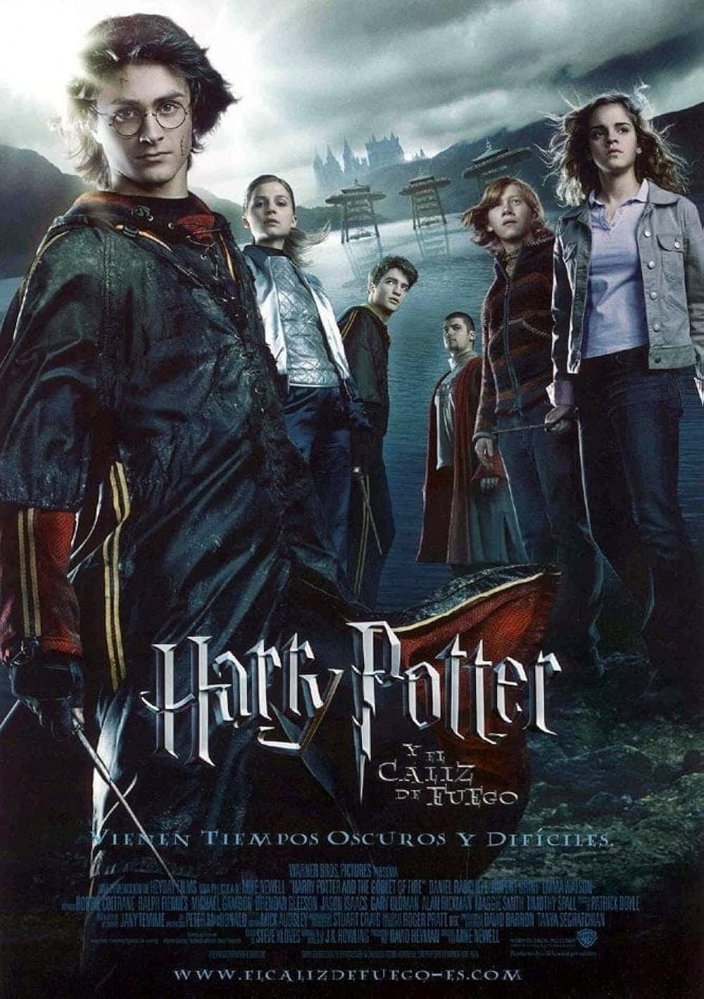

Harry Potter y el Cáliz de Fuego (2005)
En esta película, Harry participa inesperadamente en el Torneo de los Tres Magos, una peligrosa competencia entre escuelas de magia.
Aunque no debería haber sido elegido por ser menor de edad, el Cáliz de Fuego lo selecciona como campeón.
Harry deberá superar pruebas extremadamente difíciles mientras una amenaza mucho mayor comienza a crecer: el regreso de Lord Voldemort.
Esta película marca un cambio importante en la saga, volviéndose mucho más seria y oscura.
- Datos importantes
- Año de estreno: 2005
- Director: Mike Newell
- Duración: 157 minutos
- Elemento principal: Torneo de los Tres Magos y regreso de Voldemort
